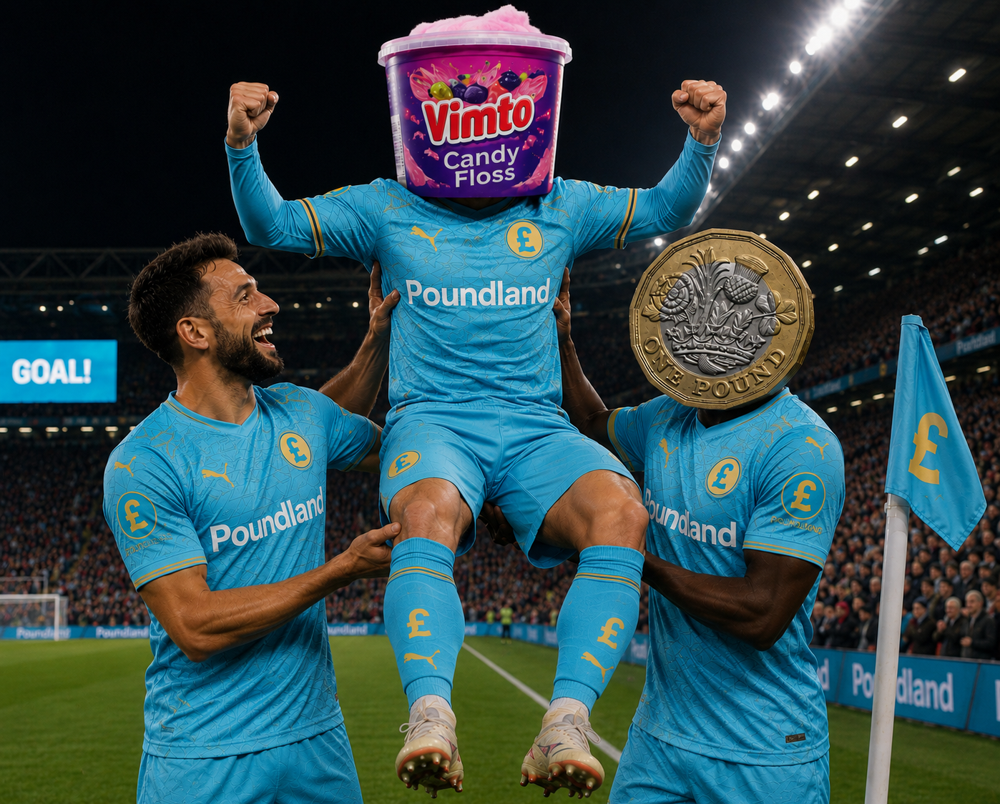

Breaking stories from around the Shop League
Expected to finish upper-midtable, Poundland FC have stormed to the summit...
Clubs prepare for the first transfer period in Shop League history.
The Pound Derby and The Bargain Derby headline a huge Gameweek 4.

Poundland FC have become the surprise package of the Shop League season, sitting top of the table after three matches despite many pre-season predictions suggesting they would finish somewhere in the upper-midtable places.
While the season is still in its infancy, Poundland's perfect start has caught supporters and pundits by surprise. Three wins from three matches, twelve goals scored and none conceded has left them leading the division.
Their campaign began in spectacular fashion with a dominant 6-0 home victory over Farmfoods Albion. The result immediately sent a message to the rest of the league that Poundland would not simply be making up the numbers.
They followed that performance with another impressive display away from home, defeating Co-Op Rovers 3-0 and maintaining their perfect defensive record.
However, their biggest statement came against one of the league favourites. Aldi Rovers were tipped by many to challenge for the title this season, yet Poundland brushed them aside with a commanding 3-0 victory.
The result has transformed expectations around the club. Fans who were hoping for a respectable midtable finish are now daring to dream of a possible title challenge, although club officials have urged caution.
Manager Sid Skittels praised his players after the victory over Aldi but was quick to remind everyone that the season remains very young.
"It's a fantastic start and the players deserve all the credit," he said. "But we've only played three matches. There's a long way to go and we have to stay focused on improving every week."
Whether Poundland can maintain this remarkable form remains to be seen, but after three matchdays they sit proudly at the summit of the Shop League and have become the story everybody is talking about.
Gameweek 4 is set to be one of the biggest weekends of the Shop League season so far, with supporters treated to not one, but two major derby clashes.
The headlines this weekend include The Pound Derby as Poundstretcher Rovers welcome league leaders Poundland FC, while The Bargain Derby sees AFC Home Bargains take on BM Albion in another highly anticipated fixture.
The Pound Derby arrives with plenty of excitement surrounding it. Poundland FC have made a perfect start to the campaign, winning all three of their opening matches while scoring twelve goals without conceding. Their impressive form has seen them climb to the top of the table and many now believe they could be genuine title contenders.
Poundstretcher Rovers, however, will be determined to spoil the party. Although their start has been more inconsistent, derby matches often ignore league positions and form. Bragging rights will be just as important as the three points, with both sets of supporters eager to claim victory.
Elsewhere, attention turns to The Bargain Derby as AFC Home Bargains host BM Albion. While neither side has enjoyed the start they had hoped for, this fixture represents a huge opportunity to kick-start their seasons.
Home Bargains will be looking to make home advantage count and move further up the table, while BM Albion know a victory over one of their closest rivals could provide a massive confidence boost heading into the coming weeks.
Away from the two derbies, the rest of Gameweek 4 also promises plenty of drama. Every point is becoming increasingly valuable as clubs begin to establish themselves at either end of the table. Early title challengers will hope to maintain their momentum, while teams near the bottom are desperate to record their first victories of the campaign.
With two fierce rivalries taking centre stage and several important fixtures elsewhere across the division, Matchday 4 promises to be one of the most exciting weekends in Shop League history so far.
Whether it's The Pound Derby, The Bargain Derby or one of the other six fixtures, supporters can expect another action-packed round of Shop League football.